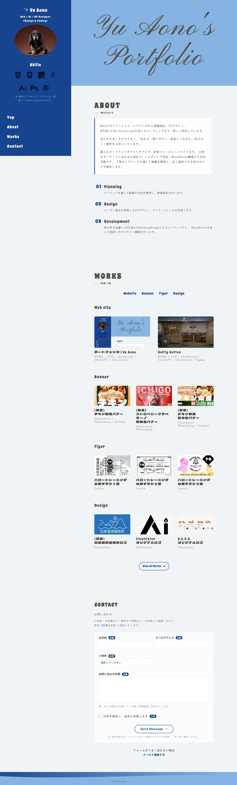
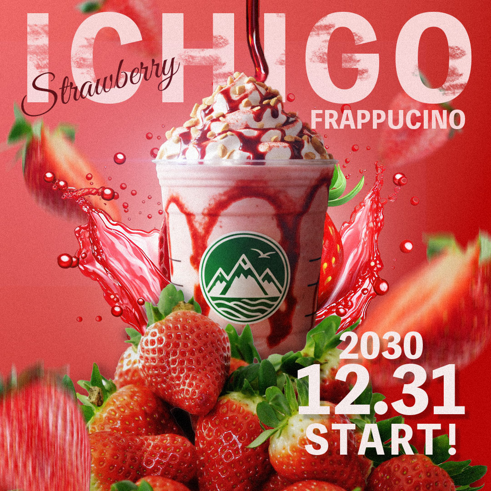
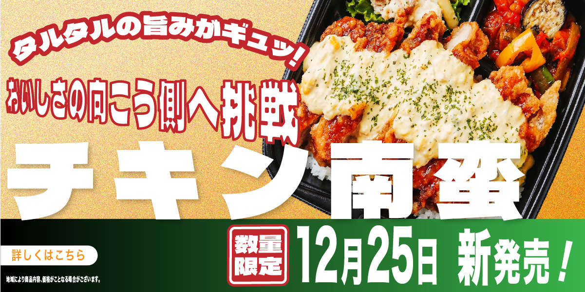
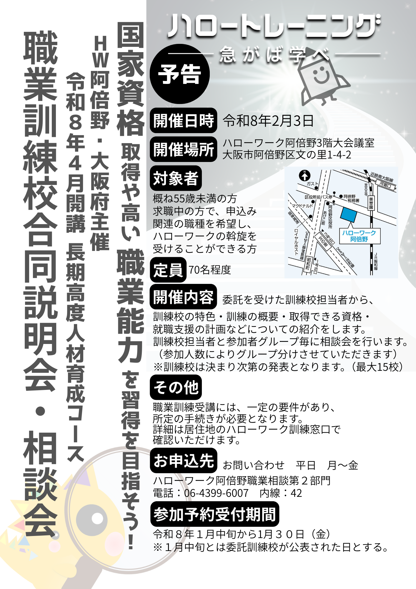
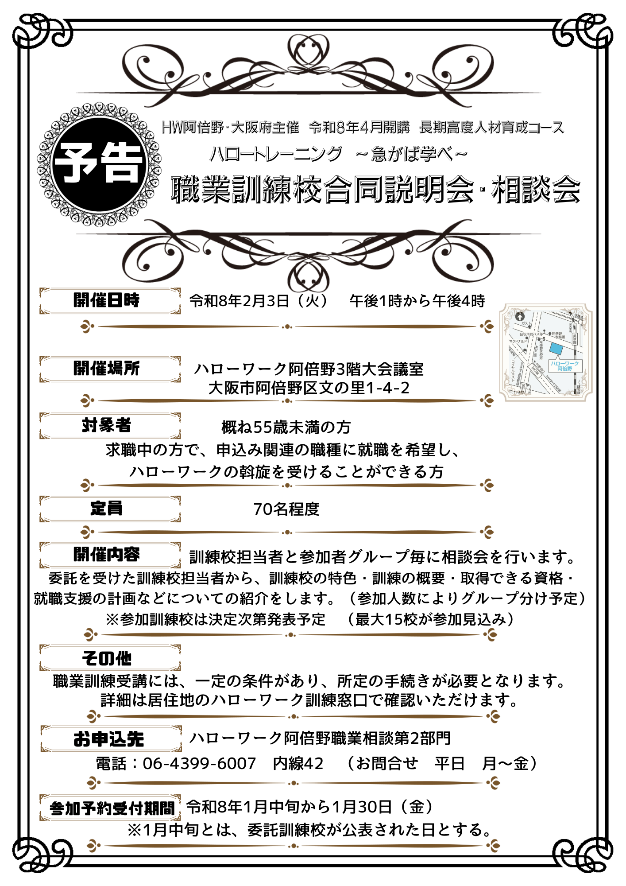
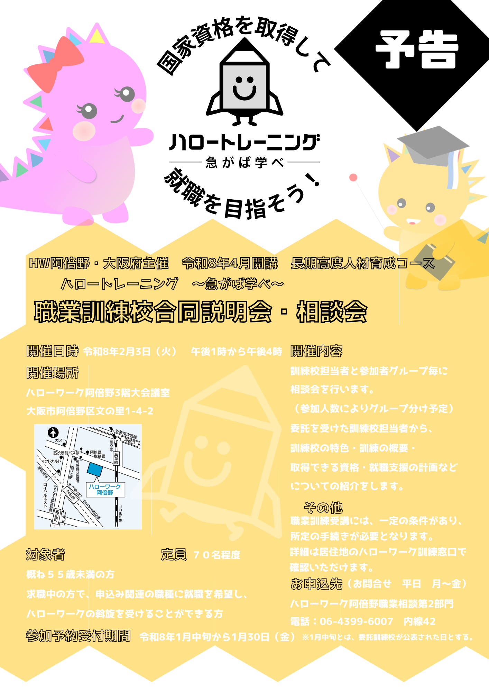

Yu Aono's Portfolio
ABOUT 私について
Webデザイナーとして、ヒアリングから情報設計、UIデザイン、 HTML/CSS/JavaScriptを用いたコーディングまで一貫して対応しています。
見た目の美しさだけでなく、「伝わる・使いやすい・成果につながる」Webサイト制作を大切にしています。
個人のポートフォリオサイトやブログ、企業のコーポレートサイトまで、 目的やターゲットに合わせた設計で、レスポンシブ対応・WordPress構築にも対応可能です。 丁寧なヒアリングを通して課題を整理し、長く運用できるWebサイトを制作します。
-
01
Planning
ヒアリングを通して課題や目的を整理し、情報設計を行います。
-
02
Design
ユーザー視点を重視したUIデザイン・ワイヤーフレームを作成します。
-
03
Development
保守性を意識したHTML/CSS/JavaScriptによるコーディングと、 WordPressを用いた更新しやすいサイト構築を行います。
WORKS 作品一覧
Web site
-

ポートフォリオ | Yu Aono
HTML / CSS / JavaScript / ChatGPT / Illustrator
-

Guilty Cotton
HTML / CSS / JavaScript / ChatGPT / Illustrator / Figma
Banner
-

(架空) チキン南蛮バナー
Illustrator / Photoshop / Gemini
-

(架空) ストロベリーフラペチーノ 新商品バナー
Illustrator / Photoshop
-

(架空) チキン南蛮 長方形バナー
Illustrator / Photoshop / Gemini
Flyer
-

ハロートレーニング 公募チラシ１案
Canva
-

ハロートレーニング 公募チラシ２案
Canva
-

ハロートレーニング 公募チラシ３案
Canva
Design
CONTACT
お問い合わせ
ご相談・お見積もり・制作のご質問など、お気軽にご連絡ください。
原則 3営業日以内 に返信いたします。